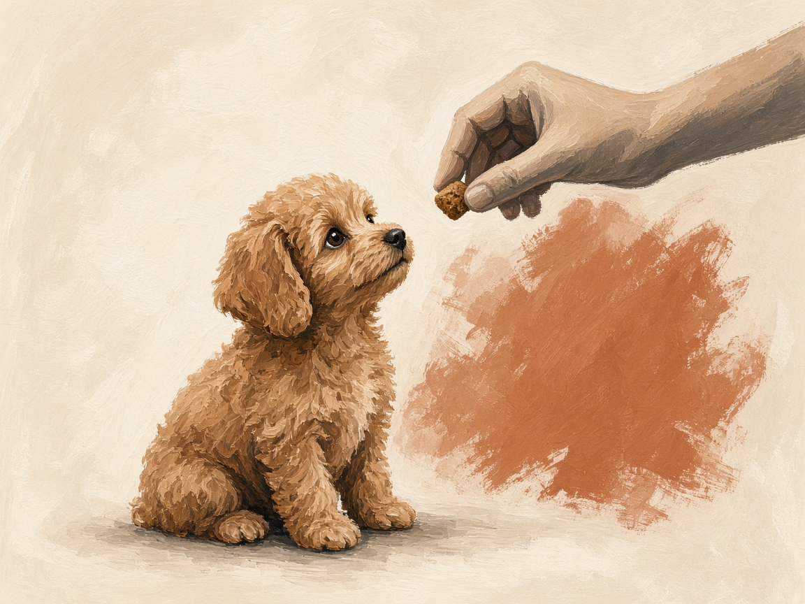

Home - Harness
Guide - Walks
A toy poodle harness that stays on
A loose harness stays in your hand. A collar puts the pull on a small throat.
Short answer. A toy poodle slips a loose harness because the chest is narrow and the coat hides the fit. Two fingers under each strap, the chest strap behind the front legs, and a small indoor lift that does not pull the harness over the head. Start indoors for a minute, then add the leash. A collar alone is a poor way to walk a dog this small. Coughing, a rub that breaks the skin, or a harness they exit on every walk means stop and refit.

Why they back out
A toy poodle has a narrow chest and a coat that hides a loose strap. If the neck opening is wide, they duck and the harness stays in your hand. A collar instead puts that pull on a small throat. A harness is the kinder equipment. It only works if it stays on.
A fit you can check
- The chest strap sits behind the front legs, not on the belly.
- You can slide two fingers under each strap. Not a whole hand.
- Lift them a few centimetres by the harness, indoors, over a soft place. It should not slide over the head.
- Watch them walk. A shortened step or a twist means something is rubbing.
- Recheck after a haircut. A shorter chest makes yesterday's fit too big.
Put it on before the walk
Indoors, for a minute, with a treat. Then the leash, still indoors. The first 30 days calls this a positive association. The walk is step three, not step one.
Questions owners ask
Why does my toy poodle slip out of the harness?
The neck opening is usually too wide, or the chest strap sits too low. Allow two fingers of room, keep the chest strap behind the front legs, and do a lift test indoors before you trust it outside.
Should a toy poodle walk on a collar or a harness?
A harness. A collar puts a pull on a small throat. The harness still has to be fitted, or they will back out of it.
How do I introduce a harness to a toy poodle?
Indoors, on for a minute, treat, off. Then the leash in the house. Then a short walk. The first week of that practice is in the first 30 days guide.
On for a minute, then the street
If you can lift them a little and the harness stays, the walk is allowed to begin.
Back to days 8 to 14Owner routines, not a veterinary diagnosis. A cough, a broken rub, or pain on the walk belongs with a veterinarian.